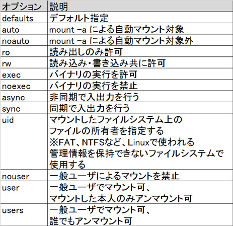
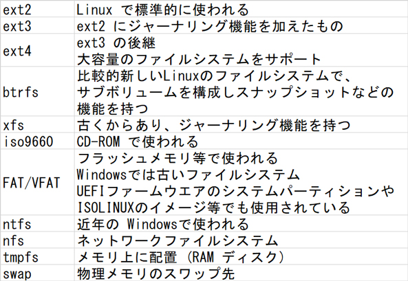

- 問題ID : 21948 ファイルシステムの設定とマウント
- 履歴
正解
users
解説
/etc/fstab のオプション部分には、以下のようなオプションが指定できます。

ユーザ権限でマウントを可能にし、誰でもアンマウントできるようにするオプションは
・users
であるとわかります。
他の選択肢については、
・user
users と似ており、ユーザ権限でのマウントを可能にしますが、こちらは本人のみアンマウントが可能です。
ここでは「誰でもアンマウントできる」とありますので、誤りです。
・nouser
nouser という名前通り、ユーザ権限でのマウントを禁止します。
この場合、マウントは管理者（root）権限でしか行えません。
なおこの動作がデフォルトなので、user、users を指定しなかった場合も管理者権限でのみマウントが可能になります。
ここでは「ユーザ権限でマウント」できなければならないので、誤りです。
・suser
このようなマウントオプションは存在せず、誤りです。
参考
「/etc/fstab」は利用するファイルシステムのマウント設定を事前に行っておく設定ファイルです。
一行一行がひとつのファイルシステムのマウント設定を表しており、mountコマンドは「/etc/fstab」の先頭のエントリから順番に設定記述を参照して動作します。そのため、「/」（ルートディレクトリ）は最初の方に記述するなど、エントリの順番が重要です。
各行には以下の書式で設定を書きます。
「デバイス」 「マウント先」 「種類」 「オプション」 「dumpフラグ」 「fsckフラグ」
「デ
バイス」部には /dev/sda1 のようにデバイスファイルを書くか、ラベル（事前に tune2fs コマンドや e2label
コマンドでファイルシステムに対して付けておいた名前）や
UUID（デバイスを識別する一意な値）を使った指定を書きます。なお、ラベルやUUIDはblkidコマンドで確認できます。
ラベルを使う場合は LABEL=myboot のように「LABEL=」の後ろにラベル名を書きます。この例ならラベル名は myboot です。
UUID を使う場合も同様で「UUID=」の後ろに続けて UUID 文字列を書きます。
「マウント先」部にはルートファイルシステム上のどの位置にマウントするかの指定をルートからのパスで書きます。/boot や /media/cdrom など。
「種類」部にはデバイス部で指定したファイルシステムの種類を書きます。
名前と概要を覚えておくべきファイルシステム名をまとめておきます。

「オプション」部にはマウントオプションを書きます。
主要なオプションは以下の通りです。
デフォルトでは async, auto, exec, nouser, rw （と上記に載っていない dev, suid）が指定されたのと同じ状態で、オプションを記述するとこれが上書きされていきます。
どのオプションも上書きせず、そのままで良いことを示す指定が defaults です。
「dump フラグ」部にはそのファイルシステムを dump コマンドの対象とするかどうかを 0 か 1 で書きます。0 では対象外となり、1 では対象となります。
「fsck フラグ」部には起動時に自動的に行われる fsck の優先度を数字で書きます。数字が小さいものから順にチェックされますが、0 は例外で、チェックを省く指定になります。